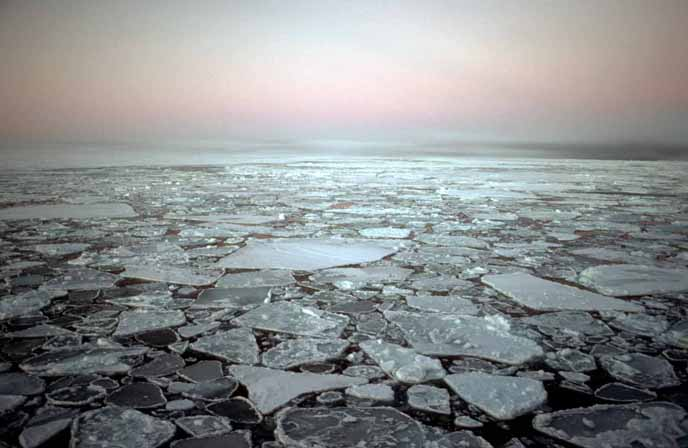
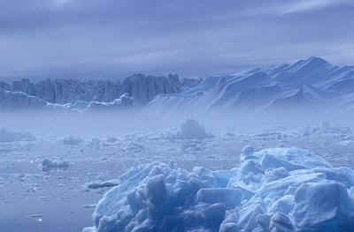
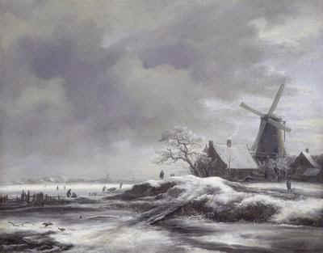

O
yeah, that good old Ice Age. Wasn't that something prehistoric, an
aberration of nature somewhere hidden deep in our prehistoric past?
Wrong.
In fact, we're still living in an Ice Age today. The ice caps that cover the
poles and the mountain tops are the best proof of that. Our Ice Age,
dubbed the pleistocene epoch, began some 1,6 million years ago. And
it still lasts.
So
if we're living in Ice Age now, Ice Ages can't be that bad, you say. Oh,
but that's only because currently, we live in an Ice Age phase that
geologists call an interglacial: a period of milder temperatures
inbetween ice-cold, frost-dominated glacials. During interglacial,
the ice recedes to the mountain tops and the polar caps. It just sits there
and waits.
But
don't mistake: the threat is there all the same. In Ice Ages such as
the one we live in, "glacials" is the rule; "no glacials" the exception. While
interglacials last only 10,000 to 15,000 years,
a typical glacial roughly lasts 100,000 years. Frost and bizarre cold is in
fact currently the default climate of the northern hemisphere!
And
time's running out. Our interglacial period began 12,000-13,000
years ago, so the next glacial period is due to
arrive any millennium now. And a bad thing about glacials is: they may start
quite suddenly.
According to one estimate, one evening you will hear the weather report telling you something odd has happened. There is snow in a country where you don't expect it: Israel, Maroc, Egypt or southern China. It is a chance event, it could happen any winter. But this time, it pushes the world's climate into its "glacial" mode.
The snow acts as a mirror, bouncing sunlight back into space. As a consequence, Earth doesn't warm up again as it should. Suddenly and abruptly, our interglacial climate collapses. Within years or een months, temperatures will drop markedly. In the end, temperatures will decline some 15 degrees Celsius (27 degrees F) on average. But in some places, the decline will be up to 40 degrees Celsius.
And
as the climate shift rolls into action, there's the usual apocalyptic
rumble-a-bumble.
Huge storms and heavy rainfall will ravage the world. You will have floods,
biblical outpoors of hail and amazing thunderstorms. Cities and entire
countries will be disrupted, millions of people will die. It'll be pretty
darn nasty!
And then, there's the snow. In the higher parts of Europe and the US, huge piles of snow start accumulating. And the more there is, the more is pressed into plates of solid ice: glaciers.
Next,
after some decades, the first glaciers start moving. Provokingly slow, they
begin creeping down from the mountains, crushing everything they encounter,
covering ever bigger pieces of land under a thick, lifeless layer of
coldness. The icy tongues will crumble one city after the other and munch up
entire societies.
By
now, you may want to pack your things and move elsewhere. Because there
you have it. Ice Age at its best, for a staggering 100,000 years to come.
Only the southern hemisphere will be a nice place to be.
But
then again, there's a small but alarming possibility that the cold will
overrun the entire planet. For reasons not exactly known, this is what
happened 2,3 billion year ago, and then again 700 million years ago and 600
million years ago. In those
days, there was only life in the oceans. And all the better. On each
occasion, the planet was completely white for many millions of years. The Earth's
`thermostat' was totally taken aback by this
unimaginable burst of winter.
Heat vs. Cold?
Come
on, cut the doom talk, you might say. At the moment, temperatures are
rising, with all those humans tinkering with the climate. It isn't very
likely an Ice Age will occur in the midst of this era of global warming and
greenhouse effect. Finally, there's something GOOD about pollution:
it keeps the glaciers away.
Well,
not necessarily. The climate instability man has built up over the years
could be just what it takes to kickstart Superwinter.
It
goes like this: mankind emits a hell of a lot of greenhouse gasses, such
as carbon dioxide. But plants and algae live on carbon dioxide. They'll grow
and grow, because there's plenty of the stuff around. Already, this effect
is clearly seen in oceans, where algae and plankton thrive more than ever.
But
then, after some decades, carbon dioxide is up. Be it because of humans
switching to other, cleaner fuels, or be it because there are so many algae
and plants; the carbon dioxide level in the atmosphere will drop. But all
those `extra' plants and algae will still be there, sucking up all carbon
dioxide
they can get. In a short period of time, they will suck almost all carbon
dioxide out of the Earth's atmosphere.
And
when that happens, the stage is set for the next big freezing, since carbon
dioxide is also the `blanket' that prevents the warmth from flying
away from the Earth's surface.
Mini Ice Age?
|  |
|
|
And then there's the "Day After Tomorrow" scenario. In this blockbuster movie, the sea current that brings warmth from the tropics to the northern hemisphere collapses. Within days, an Ice Age kicks in.
The good
news is that it's impossible: the Ice Age the movie predicts is too fierce,
and comes too fast. But there's a core of truth here, too. Indeed, the Gulf Stream
that pushes warm water to the US and Europe is dimming. This could unleash a
so-called "Mini Ice Age" in the West.
Now, a Mini Ice Age is something you should be able to survive. Think of a
period of several hundreds of years with cooler summers and cold winters -
the climate you're used to, but a tad colder. In fact, from about 1300 tot
1800 we did have a Mini Ice Age already!
But don't count your blessings yet. Even a Mini Ice Age would severely
disrupt our world -- especially our economies. Harvests would fail. Prizes
would sky-rocket. Businesses would go bankrupt. Economies would fall
apart.
Oh,
and there's one more risk. Another eerie hazard threatening our climate is
that the Sun one day becomes blackened by cosmic debris, for example when
a comet explodes in the face of the Sun. And when that happens, better
turn up the heat!
| 1.
Widening of the orbit |
Right now, the Earth's orbit around the Sun is nearly circular. That's good, because our planet always gets a decent amount of sunshine. But very slowly, Earth's orbit around the Sun widens. About 50,000 years from now, it will be elliptical. On average, we get less sunshine that way. This is probably the most important cause of Ice Ages. |
| 2.
Tilting of the axis |
Our planet spins around an axis that is slightly tilted. But the axis slowly tips over - and goes back again. When the axis is at its straightest, we will have warmer winters and cooler summers. This should promote an Ice Age: in the winters, you will have more snowfall on the poles, while in the summers, less ice will melt. Luckily, it will take another 20,000 years before the axis is straight up again. |
3. Wobble of the axis |
Even more complicated, the Earth's axis wobbles, much like a top that's running out. One wobble takes 23,000 years. Many researchers assume that this wobbling brings about temperature changes on our planet - and occasionally triggers an Ice Age. |
| 4.
Space clouds |
Every once and a while, our solar system should pass through a 'Giant Molecular Cloud' - a vast region of dust and gas in space. For millions of years, the cloud would cool our climate, as tiny carbon and silicate dust particles enter the atmosphere and block the sunlight. Some scientists believe this is what caused the 'Snowball Earth' super Ice Ages on our planet, 600 and 750 millions of years ago. |
| 5.
Volcanoes |
Big volcanic eruptions can spew out so many soot and gas, that the sunlight is blocked out and the Earth cools. Depending on how much volcanic activity there is, this could trigger extreme winters - and maybe even an Ice Age. |
| 6.
Meteor impacts, nuclear wars |
Meteor impacts and full-scale nuclear wars should do roughly the same as volcanoes. They puff huge amounts of gas and dust into the atmosphere. This prevents sunlight from reaching the surface. Result: a terrible 'nuclear' or 'meteoric' winter that can last for months or even years (depending on how big the mishap was), and possibly an Ice Age. |
| 7.
Collapse of the Gulf Stream |
The Gulf Stream brings warm water from the tropics to Europe and the US. This acts as a heating system, and keeps the continents about 10 degrees Celsius warmer than they should be. But many scientists think that every now and then, the Gulf Stream breaks down. This could trigger a 'mini Ice Age' in the West -- just like the one that lasted from 1300 AD to 1850 AD. And don't look now: the current has decreased by 20 percent since the 1950s. |
| 8.
Meteor dust |
A vast asteroid from the Kuiper Belt could explode and form a dust ring around the Sun. This would dim the sunlight enough to trigger an Ice Age, some researchers believe. |
| 9. Thinning of the atmosphere | There are several processes which could suck out the methane or carbon dioxide out of the atmosphere. Bad news, because these gases trap warmth. Without them, the Earth would cool dramatically. Perhaps this is what happened when the first green plants appeared: they sucked all carbon dioxide out of the atmosphere, and maybe triggered an Ice Age. Perhaps it will happen again, when we suddenly start using 'clean' fuels. The amount of CO2 in the atmosphere would plummet. This would rob our planet of its warm little blanket. |
| 10.
Bad positioned continents |
Like the pieces of a giant sliding piece puzzle, the continents very slowly slide across the globe. Sometimes they form a huge super continent, at other times they break up. Many researchers believe the position of the continents affects Ice Ages. Continents on the poles should be bad news. A huge continent breaking up could unleash an Ice Age, too. |
 |
 |